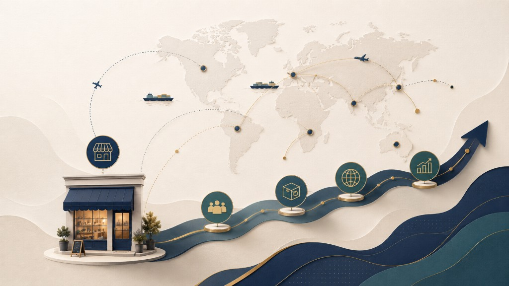

Perspectiva de proceso
Uppsala, innovación, planeación sistémica, ciclo de vida del producto (Vernon)
Revista Panorama No. 3 · Actividad 4
Perspectiva de proceso · Teorías orientadas a pymes · Clasificación para pymes de base tecnológica
Presentado por
Luisa Fernanda Ramos · Ana Valentina Amador
Cardozo, Chavarro y Ramírez · Panorama No. 3 · Politécnico Grancolombiano

Extracto: internacionalización desde la perspectiva de proceso, teorías orientadas a pymes y propuesta de clasificación para pymes de base tecnológica (Panorama No. 3).
Uppsala, innovación, planeación sistémica, ciclo de vida del producto (Vernon)
Redes, born global, fases y procesos, enfoque estratégico
Teorías pioneras y de segunda generación
Fuente: Cardozo, Chavarro y Ramírez · Revista Panorama No. 3
Las teorías de esta categoría entienden la internacionalización como compromiso incremental de aprendizaje, basado en acumulación de conocimientos y en el incremento de recursos comprometidos en mercados exteriores.
La empresa incrementa gradualmente los recursos comprometidos en un país a medida que adquiere experiencia en ese mercado. La actividad exterior sigue etapas sucesivas con mayor implicación internacional (Rialp, 1999).
Johanson y Vahlne (1990): conocimiento del mercado y asignación de recursos indican mayor participación en mercados exteriores.
Factores que impiden u obstaculizan los flujos de información entre empresa y mercado: diferencias lingüísticas, culturales, políticas, educativas o de desarrollo industrial. La entrada exterior tendería a producirse por el mercado país más próximo al de origen (Johanson y Wiedersheim-Paul, 1975).
Grandes empresas o con exceso de recursos realizan avances más significativos; las consecuencias de nuevos compromisos son menores.
Condiciones estables y homogéneas facilitan adquirir conocimiento por medios distintos a la experiencia propia.
Experiencia en mercados similares permite replicar aprendizaje en un nuevo mercado de características parecidas.
Paralelo al enfoque escandinavo (EE.UU.): la internacionalización es un proceso de innovación empresarial, básica para pymes (Bilkey y Tesar, 1977; Cavusgil, 1980; Reid, 1981; Czinkota, 1982).
Relación internacionalización–innovación: decisiones acumulativas condicionadas por el pasado y el futuro.
Supuesto de perfecta racionalidad. Miller (1993), citado por Li, Li y Dalgic (2004): diez pasos. Root (1994): secuencia de cinco pasos:
Enlace entre teoría del comercio internacional y comportamiento de la firma (Melin, 1992). Cuatro etapas:
Vernon: primeras actividades de valor agregado en país de origen; luego exportación a países de demanda similar; con estandarización y madurez priorizan minimizar costes; cuando la demanda es inelástica y crece el exterior, atrae localizar valor agregado fuera del origen (puede acelerarse por barreras comerciales o expectativa de competidores).
Explican la internacionalización como desarrollo lógico de las redes organizativas y sociales de las empresas.
Nota del autor (PDF): el I-Model, aunque clasificado en proceso, es por definición un modelo orientado a describir la internacionalización de pymes.
Red nacional (national net) y red de producción (production net) — Johanson y Mattson (1988).
Tamaño y diversidad de la red (Aldrich y Zimmer, 1986; Weimann, 1989). Sistemas no jerárquicos e intercambio social (Rialp y Rialp, 2001). Clientes, distribuidores, competidores y gobierno en la red de negocio.
Empresas internacionales de reciente creación con enfoque global desde su creación, o que se internacionalizan en los dos primeros años (Knight y Cavusgil, 1996; Madsen y Servais, 1997; Fillis, 2000).
Especialización, nichos, demanda doméstica insuficiente para tamaño mínimo eficiente
Producción, transporte y comunicación
Incluye al emprendedor fundador
Analizar interconexiones, gobierno corporativo, comité ejecutivo, redes; naturaleza del producto y demanda internacional según nivel tecnológico de la empresa.
Chen H. y Y. Huang (2004) — cuatro maneras de proceso coherente:
Park y Bae (2004): velocidad según condiciones iniciales. Prasad (1999): muchas empresas globales en segunda fase. Ley de efecto de la proporción: grandes crecen más rápido; algunas saltan fases.
Joint ventures y alianzas estratégicas: estrategia de entrada para pymes con recursos y conocimiento limitados (Kirby y Kaiser, 2003).
Pequeñas empresas: aproximación más flexible que las medianas en dimensiones de internacionalización (Kalantaridis, 2004).
Empresas familiares: expansión más segura cuando la familia se involucra activamente (Zahra, 2003).
Emprendimiento corporativo: propiedad, tamaño, edad, orientación al cliente (Luo, Zhou, Liu, 2005).
Modelos de conocimiento y aprendizaje experiencial:
¿Pero cómo se puede explicar este fenómeno? — El documento presenta las teorías de segunda generación.
Secuencia sistemática y planeada de actividades; uso incremental de información para incursión en mercados internacionales y evolución de prácticas administrativas en cada etapa.
El texto indica: «Entre estos modelos se encuentran:» (el extracto PDF de 8 páginas concluye aquí; la lista completa continúa en el artículo impreso de Panorama No. 3).
Las pioneras fueron complementadas por enfoques para empresas con mentalidad global e incertidumbre alta
De estructura de costos a modelos integradores y perspectivas en redes
¿Cómo explicar born global y alta tecnología si muchas pymes solo internacionalizan exportaciones gradualmente?
Panorama No. 3 · Proceso y pymes
La internacionalización de pymes combina aprendizaje incremental, innovación, redes, born global y estrategias flexibles — según el marco teórico del documento.
Luisa Fernanda Ramos · Ana Valentina Amador
Gracias por su atención